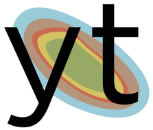

Created a chrome extension to increase web accessibility.
Extension worked by scraping data from any website, converting text to audio, and sends to a queue on an Alexa skill.
Conducted user testing and market analysis. Created/ran a Kickstarter for initial funding while marketing the extension
Software Development Project

Worked for a client to develop an interactive interface to enhance visual learning of how light waves enter gas and interact with surfaces using the yt library in GitHub.
Conducted user testing on 7 potential users, analyzed results, and implemented changes.
Worked to make interface accessible to colorblind and other visually impaired users.